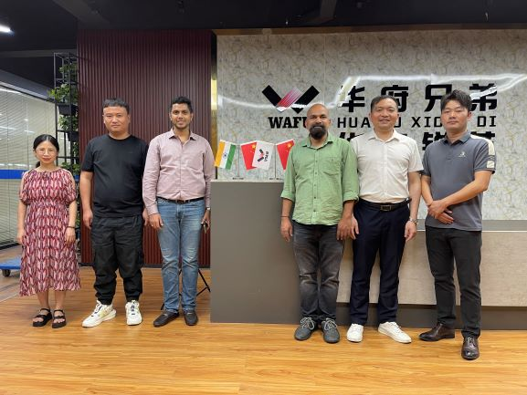

Recentemente, a WAFU recebeu um grupo de importantes clientes internacionais que viajaram longas distâncias para visitar a empresa. O objetivo da visita foi conhecer em profundidade — e adquirir — a nova série de fechaduras inteligentes remotas invisíveis da WAFU. Após dois dias de inspeção no local, troca técnica e negociações comerciais, ambas as partes alcançaram um acordo preliminar de cooperação a longo prazo, marcando mais um avanço significativo da WAFU no mercado global.

1. Porquê escolher as fechaduras inteligentes remotas invisíveis da WAFU?
- Tripla certificação CE, RCC, RoHS: a série passou de uma só vez as mais recentes diretivas europeias de segurança mecânica e ambientais, reduzindo o ciclo de testes em 30% face à média do setor e oferecendo aos clientes um acesso rápido ao mercado europeu.
- Design invisível inovador: estrutura integrada de instalação oculta; não é necessário danificar a porta original; instalação concluída em 3 minutos; compatível com portas de vários materiais e estilos, atendendo às exigências estéticas de alto padrão.
- Estabilidade excecional: testes contínuos de operação sob múltiplos climas extremos — alta temperatura, alta humidade e névoa salina — alcançaram desempenho zero falhas.
2. Experiência prática dos clientes
Durante os dois dias de visita, a delegação percorreu o showroom e a linha de produção da WAFU, experimentando diversas funcionalidades das fechaduras inteligentes remotas invisíveis:
- Controlo remoto: desbloqueio remoto ou partilha de PIN temporário via APP; os clientes testaram no local e comentaram: “Resposta extremamente rápida, praticamente sem atraso — ideal para cenários de casa inteligente.”
- Proteção de segurança: algoritmo de encriptação de nível bancário, anti-arrombamento, anti-abertura técnica e anti‑‘caixa preta’; os clientes tentaram vários métodos de “ataque” e nenhum teve sucesso.
- Fecho automático silencioso: a porta tranca automaticamente após fechar, com ruído inferior a 40 dB; clientes elogiaram: “Muito silenciosa, não perturba o descanso da família.”
3. Negociações comerciais
Na sessão comercial, a equipa WAFU apresentou uma política de suporte completa para mercados internacionais:
- Centro de stock na UE: 3.000 unidades completas mantidas no armazém internacional, reduzindo significativamente o prazo de entrega; clientes disseram: “Isto aumentará muito a nossa competitividade.”
- Rebate de vendas + fundo anual de desenvolvimento de mercado, garantindo margem de canal ≥ 38%; clientes comentaram: “Uma política tão atrativa motiva toda a equipa.”
- Fornecimento de materiais de marketing localizados, formação técnica e suporte pós‑venda para ajudar os clientes a abrir o mercado rapidamente.
4. Próximos passos: aprofundar a cooperação e crescer juntos
Esta visita presencial não só aprofundou o entendimento mútuo, como também estabeleceu uma base sólida para uma cooperação duradoura. A WAFU continuará a defender a filosofia “qualidade em primeiro lugar, cliente acima de tudo”, otimizando continuamente produtos e serviços, e trabalhando com parceiros globais para levar a segurança e conveniência da fabricação inteligente chinesa a mais famílias em todo o mundo.